Data frequently exists in groups. For example, an employer must keep track of the name, age, and salary of each employee. Accessing these values is simplified if they can be stored together. However, if the values are different types, as they are in this example, they cannot be stored together in an array. In C, values with dissimilar types can be stored together using a structure.
An aggregate data type is one that can hold more than one individual piece of data at a time. C provides two types of aggregate data, arrays and structures. Arrays are collections of elements of the same type, and individual elements are selected through a subscript or indirection on a pointer.
A structure is also a collection of values, called members, but the members of a structure may be of different types. A structure is quite similar to a record in Pascal or Modula.
Array elements can be accessed via a subscript only because all of the elements are the same size. The situation is different with structures. Because a structure's members can be of different sizes, subscripts cannot be used to access them. Instead, structure members are given names and are accessed by those names.
This distinction is important. A structure is not an array of its members. Unlike an array name, the name of a structure variable is not replaced with a pointer when it is used in an expression. Subscripts cannot be used on a structure variable to select specific members.
A structure variable is a scalar, so you can perform the same kinds of operations with it that you can with other scalars. Structures may be passed as arguments to functions, they may be returned by functions, and structures of the same type may be assigned to one another. You can declare pointers to structures, take the address of structure variables, and declare arrays of structures. However, we must first cover a few more basics before discussing these issues.
Structures are declared by listing the members that they will contain. This list includes the type and the name of each member.
struct tag { member-list } variable-list ;
This structure declaration syntax requires some explanation. The optional fields cannot all be omitted—at least two of them must appear [1] .
Here are several examples.
This declaration creates a single variable named x, which contains three members: an integer, a character and a float.
This declaration creates an array y of twenty structures and z, which is a pointer to a structure of this type.
CAUTION!
These two declarations are treated by the compiler as entirely different types, even though their member lists are identical. Thus, the variables y and z are a different type than x, so the statement
z = &x;is illegal.
But does this fact mean that ail structures of a given type must be created in a single declaration?
Fortunately, no. The tag field allows a name to be given to the member list so that it can be referenced in subsequent declarations. The tag allows many declarations to use the same member list and thus create structures of the same type. Here is an example.
The declaration associates the tag SIMPLE with this member list. The declaration doesn't have a variable list, so it doesn't create any variables.
This declaration is similar to making a cookie cutter. A cookie cutter determines the shape of cookies yet to be made, but the cookie cutter is not a cookie. The tag identifies a pattern for declaring future variables, but neither the tag nor the pattern are variables.
struct SIMPLE x;
struct SIMPLE y[20], *z;These declarations use the tag to create variables. They create the same variables as the first two examples but with one important difference—now x, y, and z are all the same kind of structure.
Another good technique for declaring structures is to create a new type with a typedef, as in the following example.
This technique has almost the same effect as declaring a structure tag. The difference is that Simple is now a type name rather than a structure tag, so subsequent declarations would look like this one:
Simple x;
Simple y[20], *z;TIP
If you want to use a particular structure in more than one source file, you should put the tag declaration or typedef in a header file. You can then #include the declaration wherever it is needed.
In the examples so far, I have used only simple types for members. But any kind of variable that can be declared outside of a structure may also be used as a structure member. Specifically, structure members can be scalars, arrays, pointers, and even other structures.
Here is a more complex example:
The members of a structure may have names that are identical to members of other structures, so the member a of this structure doesn't conflict with the member a which is a part of the struct SIMPLE s. As you will see next, the way in which members are accessed allows either member to be specified without ambiguity.
The members of a structure variable are accessed with the dot operator, which takes two operands. The left operand is the name of a structure variable and the right operand is the name of the desired member. The result of this expression is the designated member. For instance, consider the declaration
struct COMPLEX comp;The member named a is an array, so the expression comp.a selects that member. This expression is an array name, so you can use it in any context in which an array name could be used. Similarly, the member s is a structure, so the expression comp.s is the name of a structure variable and may be used in any way that we might use an ordinary structure variable. Specifically, we can use this expression as the left operand of another dot operator, as in (comp.s).a, to select the member named a of the structure s, which is a member of the structure comp. The dot operator associates from left to right so we do not need the parentheses; the expression comp.s.a is equivalent.
Here is a more complex example. The member sa is an array of structures, so comp.sa is an array name whose value is a pointer constant. Applying a subscript to this expression, as in (comp.sa)[4], yields one element of the array. But this element is a structure, so we can use another dot operator to get one of its members. Here is the expression:
( (comp.sa)[4] ).cThe subscript and dot operators have the same precedence and all associate left to right, so we don't need these parentheses either. The expression
comp.sa[4].cis equivalent.
How do you access the members of a structure if all you have is a pointer to it? The first step is to apply indirection to the pointer, which takes you to the structure. Then you use the dot operator to select a member. However, the dot operator has higher precedence than the indirection, so you must use parentheses to ensure that the indirection is evaluated first. As an example, suppose an argument to a function is a pointer to a structure, as in this prototype:
void func( struct COMPLEX *cp );The function can access the member f of the structure to which this variable points with this expression:
(*cp).fThe indirection follows the pointer to the structure; once there the dot operator selects a member.
Because this notation is a nuisance, C provides a more convenient operator to do this job—the -> or arrow operator. Like the dot, the arrow takes two operands, but the left operand must be a pointer to a structure. The arrow operator applies indirection to the left operand to follow the pointer, and then selects the member specified by the right operand exactly like the dot operator. The indirection is built into the arrow operator, though, so we don't need an explicit indirection or the accompanying parentheses. Here are a few examples using the same pointer as before.
cp->f
cp->a
cp->sThe first expression accesses the floating-point member. The second is an array name, and the third is a structure. Shortly you will see numerous additional examples to clarify accessing structure members.
Is it legal for a structure to contain a member that is the same type as the structure? Here is an example to illustrate this idea.
This type of self reference is not legal, because the member b is another complete structure that will contain its own member b. This second member is yet another complete structure and contains its own member b, and so forth, forever. The problem is somewhat like a recursive program that never stops recursing. But the following declaration is legal. Can you see the difference?
The difference between this declaration and the previous one is that b is now a pointer rather than a structure. The compiler knows the size of a pointer to a structure even before the size of the structure has been determined, so this self reference is legal.
If the idea of a structure containing a pointer to itself seems strange, keep in mind that it will actually be pointing to a different structure of the same type. More advanced data structures, such as linked lists and trees, are implemented with this technique. Each structure points to the next element on the list or down this branch of a tree.
CAUTION!
Watch out for this trap:
The intent of this declaration is to create SELF_REF3 as the type name for this structure. It fails, however. The type name SELF_REF3 only becomes defined at the end of the declaration, so it is undefined inside of the declaration.
The solution is to define a structure tag to use in declaring b, as shown next.
typedef struct SELF_REF3_TAG {
int a;
struct SELF_REF3_TAG *b;
int c;
} SELF_REF3;Occasionally you will have to declare structures that are mutually dependent, that is, each contains one or more members of the other type. As with self referential structures, at least one of the structures must refer to the other only through pointers. The problem is in the declaration: if each structure refers to the other's structure tag, which one is declared first?
The solution to this problem is the incomplete declaration, which declares an identifier to be a structure tag. We can then use the tag in declarations where the size of the structure is not needed, such as declaring pointers to it. A subsequent declaration associates a member list with the tag.
Consider this example, in which two different structure types each contain a pointer to the other.
struct B;
struct A {
struct B *partner;
/* other declarations */
};
struct B {
struct A *partner;
/* other declarations */
};The incomplete declaration of the tag B is needed in the member list of A. Once A has been declared, the member list for B can be declared.
Structures can be initialized in much the same way as arrays. A comma-separated initializer list enclosed in braces is used to specify the values for the structure members. The values are written in the order given in the member list. Missing values cause the remaining members to get default initialization.
Structures containing array or structure members are initialized similar to multidimensional arrays. A complete initializer list for the aggregate member is nested within the initializer list for the structure. Here is an example:
struct INIT_EX {
int a;
short b[10];
Simple c;
} x = {
10,
{ 1, 2, 3, 4, 5 },
{ 25, 'x', 1.9 }
};The operators for accessing structures and their members directly and through pointers are quite simple, but they can become confusing when applied in complicated situations. Here are some examples to help you better understand how the operators work. The examples use the following declarations.
typedef struct {
int a;
short b[2];
} Ex2;
typedef struct EX {
int a;
char b[3];
Ex2 c;
struct EX *d;
} Ex;Structures of type Ex will be pictured like this:
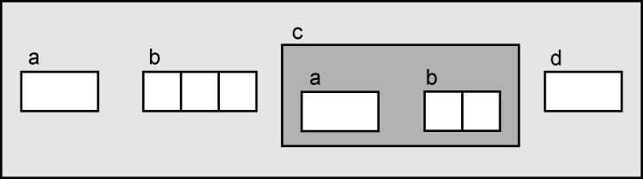
The structures are pictured this way to make the examples clearer. In fact, the diagram is not completely accurate, because the compiler avoids wasting space between the members whenever it can.
The first examples will use these declarations:
Ex x = { 10, "Hi", { 5, { -1, 25 } }, 0 };
Ex *px = &x;which produce the following variables:
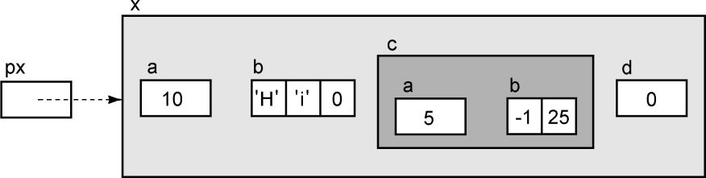
We will now examine and diagram different expressions using the notation from Chapter 6.
Let's begin with the pointer variable. The R-value of the expression px is:
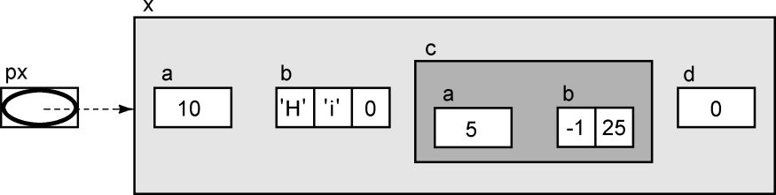
px is a pointer variable but there isn't any indirection operator, so the value of the expression is the contents of px. The L-value of this expression is:
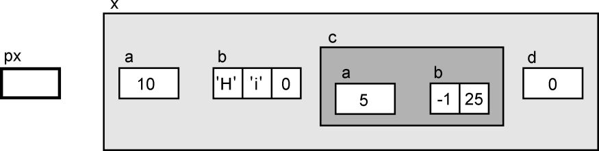
which shows that the old value of px is about to be replaced by a new value.
Now consider the expression px + 1. This expression is not a legal L-value because its value is not stored in any identifiable memory location. The expression's R-value is more interesting. If px had been pointing to an element of an array of structures, this expression would point to the next structure in the array. As it is, the expression is illegal because there is no way of telling whether what comes next in memory is one of these structures or something else. The compiler is not able to detect such errors, so it is up to you to determine when pointer arithmetic is meaningful.
We can apply indirection to the pointer with the * operator. The R-value of the expression *px is the entire structure to which px points.
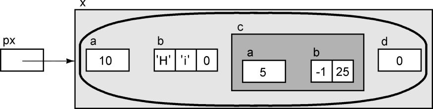
The indirection follows the arrow, which is shown as a solid line, and the result is the whole structure. You can assign this expression to another structure of the same type, or you can use it as the left operand of the dot operator to select a specific member. You can also pass it as an argument to a function or return it as the value of a function (though there are some efficiency concerns about these last two operations that will be discussed later). The L-value of the expression *px is:
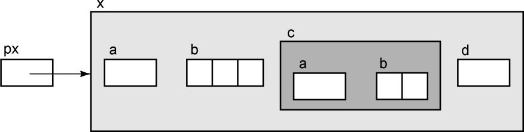
Here, the structure is about to receive a new value, of more precisely, new values for all of its members. As an L-value, it is the place that is important, not the values contained in the place.
The expression *px + 1 is illegal, because the result of *px is a structure. Addition is not defined between structures and integers. But what about the expression *( px + 1 ) ? If x had been an element of an array, this expression would refer to the structure that followed it. But x is a scalar, so this expression is actually illegal.
Now let's look at the arrow operator. The R-value of the expression px->a is
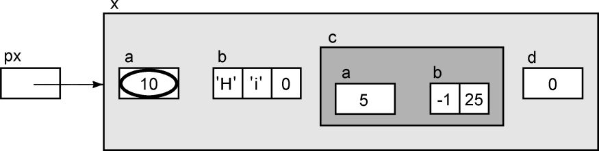
The -> operator applies indirection to px (indicated by the solid arrow) in order to get the structure, and then selects the a member. The expression px->a is used when you have a pointer to a structure but do not know its name. If you knew the name of this structure, you could use the equivalent expression x.a instead.
Let's pause here and compare the expressions *px and px->a to each other. In both cases, the address in px is used to fold the structure. But the first member in the structure is a, so the address of a is the same as the address of the structure. It would seem, then, that px points to the structure and to the first member of the structure: after all, they both have the same address. This analysis is only half correct, though. Although both addresses have the same value, they have different types. The variable px was declared as a pointer to a structure, so the result of the expression *px is the whole structure, not its first member.
Let's create a pointer to an integer.
int *pi;Can we make pi point to the integer member a? If pi had the same value as px, then the result of the expression *pi would be the member a. But the assignment
pi = px;illegal because their types do not match. Using a cast works,
pi = (int *)px;but is dangerous because it circumvents the compiler's type checking. The correct expression is simpler—to get a pointer to px->a, use the & operator:
pi = &px->a;The precedence of the -> operator is higher than that of &, so parentheses are not needed in this expression. Let's examine a diagram of &px->a:
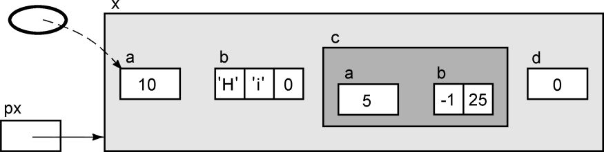
Note how the value in the oval points directly to the a member of the structure, as opposed to px, which points to the entire structure. After the assignment above, pi and px will have the same value. But their types are different, so the result of applying indirection to them will also be different: *px is the whole structure, and *pi is a single integer.
Here is another example using the arrow operator. The value of px->b is a pointer constant because b is an array. This expression is not a legal L-value. Here is its R-value.
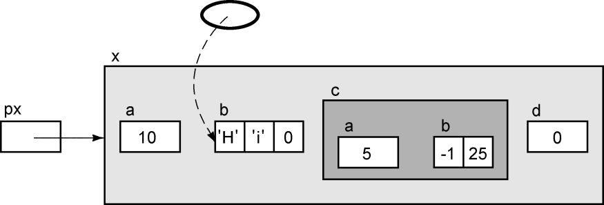
If we add indirection to this expression, it selects the first element of the array. With a subscript or pointer arithmetic, other elements of the array can be obtained as well. The expression px->b[1] selects the second array element, like this:
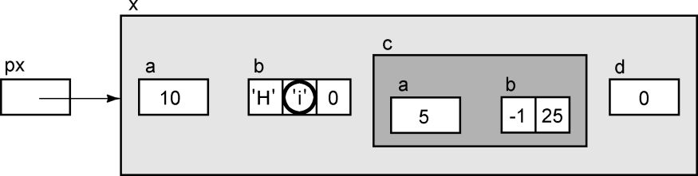
To access the member c, which is a structure, use the expression px->c. Its R-value is the entire structure.
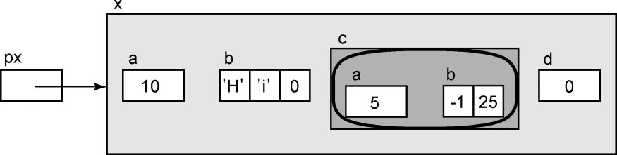
The dot operator can be added to this expression to access specific members of c. For example, the expression px->c.a has the following R-value:
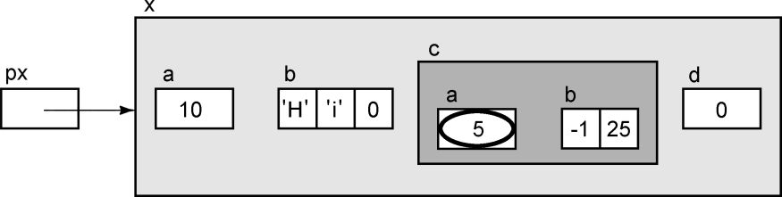
This expression contains both the dot and arrow operators. The arrow is used because px is not a structure, it points to a structure. Then the dot operator is used because px- >c does not point to a structure, it is a structure.
Here is a more complex expression:
*px->c.bExamining this expression is easy if you take one step at a time. There are three operators, and the arrow goes first px->c gives the structure c. Adding .b to the expression selects the member b from structure c. b is an array, so px->c.b is a (constant) pointer to the first element of the array. Finally, the indirection is applied to this pointer, so the result is the first element of the array. The expression is diagrammed below.
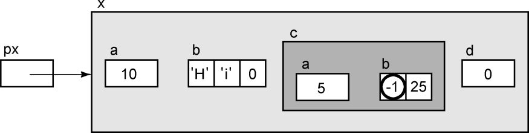
The expression px->d gives the result you would expect—its R-value is 0, and its L- value is the location itself. The expression *px->d is more interesting. Here indirection is applied to the pointer value found in the member d. But d contains the null pointer, so it doesn't point to anything. Dereferencing a null pointer is an error, but as discussed earlier, some environments will not catch it at run time. On these machines, the program will access whatever is at location zero as if it were one of these structures, and then continue merrily on as if nothing were wrong. This example illustrates the importance of checking to see that pointers really point to something before dereferencing them.
Let's create another structure and set x.d to point to it
Ex y;
x.d = &y;Now we can evaluate *px->d.
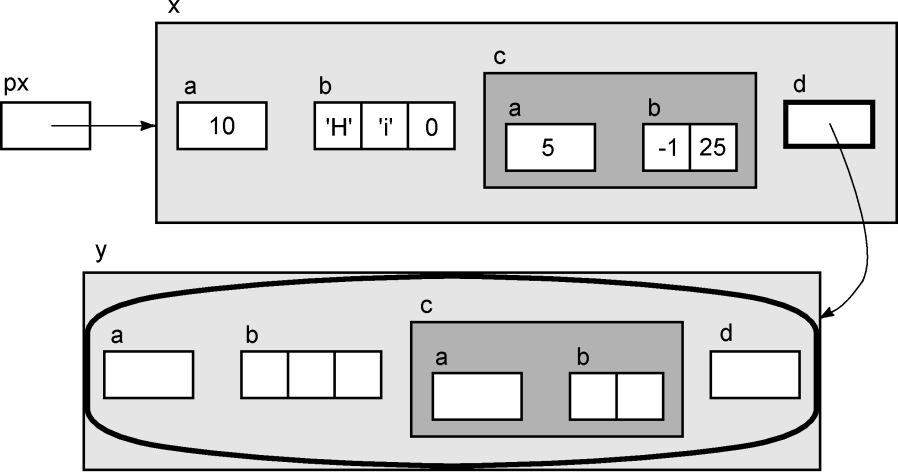
The member d points to a structure, so applying indirection to it yields the entire structure. The new structure was not initialized explicitly, so no values are shown for its members in the diagram.
As you may expect, members of this new structure can be selected by adding more operators to the expression. We use the arrow because d points to a structure. What do these expressions accomplish?
px->d->a
px->d->b
px->d->c
px->d->c.a
px->d->c.b[1]Here is a diagram of the R-value of the last expression.
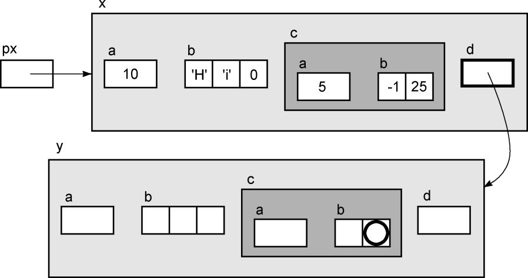
How are structures actually stored in memory? The diagrams in the previous examples imply that structures contain a lot of empty space. This picture is not entirely accurate. Memory is allocated for each of the members, one after another, in the order given by the member list. Extra memory is used only when needed to get the correct boundary alignment of a member.
To illustrate, consider this structure:
struct ALIGN {
char a;
int b;
char c;
};On a machine whose integers occupy four bytes and must begin at a byte whose address is evenly divisible by four, this structure would appear like this in memory:
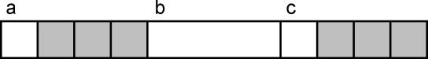
The compiler is forbidden to skip bytes for boundary alignment at the beginning of a structure, so all structures must begin on whatever boundary is required for the most stringent data type. Thus, the member a, shown by the leftmost box, begins at an address divisible by four. The next member is an integer, so three bytes (shown in gray) must be skipped to reach an appropriate boundary. After the integer comes the last character.
If a second variable of the same type were declared, it would have to begin on a boundary of four as well, so three more bytes would be skipped at the end of the structure. Thus, each structure would require twelve bytes of memory but would only use six of them, which is not very good utilization.
You can minimize the space lost to boundary alignment in structures by rearranging the member list in the structure declaration so that the members with the strictest boundary requirements appear first and those with the weakest requirements appear last. For example, this structure
struct ALIGN2 {
int b;
char a;
char c;
};contains the same members as the previous structure, but requires only eight bytes, a savings of 33%. The two characters can be stored adjacent to one another, so the only wasted space is the two bytes skipped after the structure.
TIP
There may be good reasons why we might not want to rearrange the members of a structure to reduce the memory lost to alignment. For example, we may want to keep related structure members together for easier maintenance and readability. (Lacking any such reasons, however, the members of a structure should be arranged according to their boundary needs in order to minimize the memory that will be lost to alignment.
When the program will be creating hundreds or thousands of the structures, the need to reduce wasted memory can become more important than readability concerns. In this type of situation, adding comments to the declaration may help regain much of the lost readability.
sizeof gives the total size of a structure, which includes any bytes that are skipped for boundary alignment. If you must determine the actual position of a member in a structure, taking into account boundary alignment, use the offsetof macro (which is defined in stddef.h).
offsetof( type, member )type is the type of the structure, and member is the name of the member you want. The result is a size_t value specifying the number of bytes from the beginning of the structure where the specified member begins. For example, with the declaration above,
offsetof( struct ALIGN, b )returns four.
A structure variable is a scalar and can be used wherever any other scalar can be used. Thus it is legal to pass a structure as an argument to a function, but this technique is often inappropriate.
The following code fragments are from a program written to operate an electronic cash register. Here is the declaration for a structure that contains information about an individual transaction.
typedef struct {
char product[PRODUCT_SIZE];
int quantity;
float unit_price;
float total_amount;
} Transaction;When a transaction occurs, there are many steps involved, one of which is printing the receipt. Let's look at some different ways to perform this task.
void
print_receipt( Transaction trans )
{
printf( "%s\n", trans.product );
printf( "%d @ %.2f total %.2f\n", trans.quantity,
trans.unit_price, trans.total_amount );
}If current_trans is a Transaction structure, we could call the function like this:
print_receipt( current_trans );CAUTION!
This approach produces the correct result, but it is inefficient because the call-by-value argument passing of C requires that a copy of the argument be given to the function. If PRODUCT_SIZE is 20 and we are using a machine with four-byte integers and floats, this particular structure occupies 32 bytes. To pass it as an argument, 32 bytes must be copied onto the stack and then discarded later.
Compare the previous function with this one:
void
print_receipt( Transaction *trans )
{
printf( "%s\n", trans->product );
printf( "%d @ %.2f total %.2f\n", trans->quantity,
trans->unit_price, trans->total_amount );
}which would be called in this manner:
print_receipt( ¤t_trans );Here, a pointer to the structure is passed. The pointer is smaller than the entire structure and therefore more efficient to push on the stack. The price paid for passing a pointer is that we must use indirection in the function to access the members of the structure. The bigger the structure, the more efficient it is to pass a pointer to it.
On many machines, you can improve the efficiency of the pointer version by declaring the parameter to be a register variable. On some machines, this declaration requires an extra instruction at the beginning of the function to copy the argument from the stack (where it was passed) to the register in which it will be used. But if the function performs indirection on the pointer more than two or three times, then the savings realized in the indirections will be greater than the cost of the additional instruction.
A drawback of passing a pointer is that the function is now able to modify the values in the calling program's structure variable. If it is not supposed to do this you can use the const keyword in the function to prevent such modifications. Here is what the function prototype looks like with these two changes:
void print_receipt( register Transaction const *trans );Let's move on to another step in processing a transaction; computing the total amount due. You would expect that the function compute_total_amount would modify the total_amount member of the structure. There are three ways to accomplish this task. Let's look at the least efficient way first. The following function
would be called in this manner:
current_trans = compute_total_amount( current_trans );A copy of the structure is passed as an argument and modified. Then a copy of the modified structure is returned, so the structure is copied twice.
A slightly better method is to return only the modified value rather than the entire structure. This approach is used by the second function.
float
compute_total_amount( Transaction trans )
{
return trans.quantity * trans.unit_price;
}However, this function must be invoked in this manner:
current_trans.total_amount =
compute_total_amount( current_trans );This version is better than returning the entire structure, but the technique only works when a single value is to be computed. If we wanted the function to modify two or more members of the structure, this approach fails. Besides, there is still the overhead of passing the structure as an argument. Worse, it requires that the calling program have knowledge of the contents of the structure, specifically, the name of the total field.
The third approach, passing a pointer, is better:
void
compute_total_amount( register Transaction *trans )
{
trans->total_amount =
trans->quantity * trans->unit_price;
}This function is called like this:
compute_total_amount( ¤t_trans );Now, the total_amount field in the caller's structure is modified directly; there is no need to pass the entire structure into the function or to copy the modified structure as the return value. This version is more efficient than either of the other two functions. In addition, the caller no longer needs to know about the internals of the structure, so modularity is also improved.
When should you pass a structure, rather than a pointer, as an argument to a function? Rarely. Only when a structure is extremely small (the size of a pointer, or smaller) is it as efficient to pass the structure as it is to pass a pointer to it. For most structures, it is more efficient to pass a pointer. If you want the function to be able to modify any of the structure's members, a pointer is also preferred.
K&R C:
With very early K&R C compilers, you couldn't pass structures as arguments—the compiler simply did not allow it. Later K&R compilers did allow structure arguments. However, these compilers did not support const, so the only way to prevent a function from modifying a structure argument was to pass a copy of the structure.
One last thing to mention about structures is their capability for implementing bit fields. A bit field is declared exactly like a structure except that its members are fields of one or more bits. These variable length fields are actually stored in one or more integer variables.
The declaration of a bit field is the same as the declaration of any ordinary structure member with two exceptions. First, bit field members must be declared as int, signed int, or unsigned int. Second, a colon and an integer appear after the member name, and the integer value specifies the number of bits in that field.
TIP
It is a good idea to explicitly declare bit fields as either signed or unsigned integers. It is implementation dependent whether bit fields declared as int are interpreted as signed or unsigned values.
TIP
Programs that are intended to be portable should avoid bit fields. Because of the following implementation dependencies, bit fields may work differently on various systems.
1. Whether an int bit field is treated as signed or unsigned.
2. The maximum number of bits in a bit field. Many compilers limit bit field members to the size of an integer, so a bit field declaration that works on a machine with 32- bit integers may not work on one that uses 16-bit integers.
3. Whether the members in a bit field are allocated from left to right or from right to left in memory.
4. When a declaration specifies two bit fields and the second is too large to fit in the bits left over from the first, the compiler may either put the second bit field in the next word of memory or immediately after the first field, overlapping the boundary between memory locations.
Here is an example of a bit field declaration:
struct CHAR {
unsigned ch : 7;
unsigned font : 6;
unsigned size : 19;
};
struct CHAR ch1;This declaration is from a text formatting program that is capable of manipulating up to 128 different character values (for which seven bits are required), up to 64 different fonts (which takes six bits), in sizes from 0 to 524,287 units. The size field is too large to be held in a short integer, but the other fields are both smaller than a character. The bit field lets the programmer use the bits left over from ch and font to increase the number of bits for size, thus avoiding the need to declare a whole integer to store size.
Many compilers for machines with 16-bit integers will flag this declaration as illegal because the last field is too large. But on a 32-bit machine, this declaration would create ch1 as one of these two possibilities.
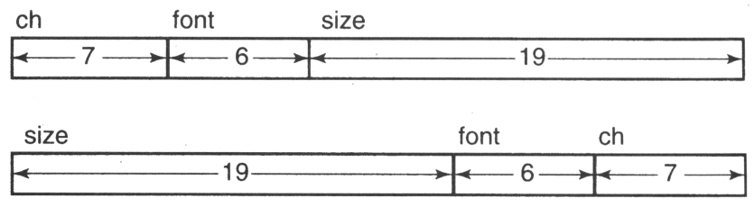
This example illustrates a good reason to use bit fields: the ability to pack odd- sized data together to save storage. This savings becomes particularly important when thousands of these structures are being used.
The other reason to use bit fields is because they make it convenient to access parts of an integer. Let's examine an example that might be found in an operating system. The code to operate the floppy disk must communicate with the controller for the disk. Often these device controllers contain several registers, each of which contains many different values all packed together into one integer. A bit field is a convenient way to access the individual values.
Suppose one of the registers for the controller was defined as:
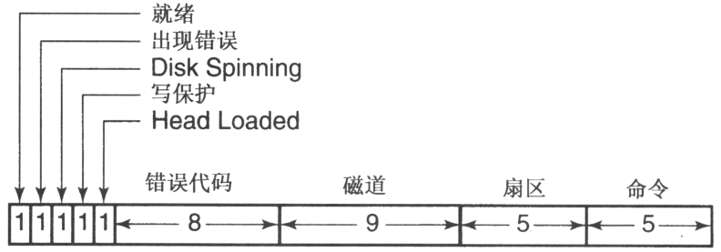
The first five fields are one bit each, and the remaining fields are larger. On a machine that allocated bit fields from right to left, the following declaration would allow easy access to the various fields in this register.
struct DISK_REGISTER_FORMAT {
unsigned command : 5;
unsigned sector : 5;
unsigned track : 9;
unsigned error_code : 8;
unsigned head_loaded : 1;
unsigned write_protect : 1;
unsigned disk_spinning : 1;
unsigned error_occurred : 1;
unsigned ready : 1;
};If the disk register is accessed at memory address 0xc0200142, we would declare the following pointer constant:
#define DISK_REGISTER \
((struct DISK_REGISTER_FORMAT *)0xc0200142)With this preparation, the code needed to actually access the disk register is simple, as shown in this code fragment.
/*
** Tell the controller which sector and track,
** and start the read operation.
*/
DISK_REGISTER->sector = new_sector;
DISK_REGISTER->track = new_track;
DISK_REGISTER->command = READ;
/*
** Wait until the operation is done,
** indicated by ready becoming true.
*/
while( ! DISK_REGISTER->ready )
;
/*
** Check for errors.
*/
if( DISK_REGISTER->error_occurred ) {
switch( DISK_REGISTER->error_code ) {
...Bit fields are a convenience. Any task that can be completed with bit fields can also be accomplished through shifting and masking. For example, the following code accomplishes exactly the same thing as the first assignment in the previous example.
#define DISK_REGISTER unsigned int *) 0xc0200142
*DISK_REGISTER &= 0xfffffc1f;
*DISK_REGISTER |= ( new_sector & 0x1f ) << 5;The first assignment uses a bitwise AND to clear all of the bits in the sector field to zero without affecting the other bits. The second takes the value of new_sector, AND's it to make sure that the value does not exceed the width of the field, shifts it left to the proper position, and then uses a bitwise OR to set the field to the desired value.
TIP
The bit field expresses this process more simply in the source code, but there isn't any difference in the object code. The same shifting and masking operations are required whether or not the bit field is used. The only advantage provided by the bit field is simplifying the source code. This advantage must be weighed against the bit field's lack of portability.
A union is a different animal altogether. A union is declared like a structure but doesn't work like a structure. All of the members of a union refer to the same location(s) in memory. Unions are used when you need to store different things in one place at different times.
First, let's look at a simple example.
union {
float f;
int i;
} fi;On a machine in which floats and integers both occupy 32 bits, the variable fi occupies only one 32-bit word of memory. If the member f is used, the word is accessed as a floating-point value; if the member i is used, the word is accessed as an integer. So this code
fi.f = 3.14159;
printf("%d\n", fi.i );first stores the floating-point representation of π into fi, and then interprets those same bits as if they were an integer and prints out that value. Note that both member are referring to the same bits; the only difference is that the type of each member determines how the bits are interpreted.
Why would anyone ever want to do anything like this example? It would be helpful if you wanted to see how floating-point numbers are stored on a particular machine but probably not for anything else. Here is a more realistic example. One task of a BASIC interpreter is to keep track of the values of variables used in. the program. BASIC provides several different types of variables, so the type of each variable must be stored along with its value. Here is a structure that saves this information, but it is not too efficient.
struct VARIABLE {
enum { INT, FLOAT, STRING } type;
int int_value;
float float_value;
char *string_value;
};When a variable in the BASIC program is created, the interpreter creates one of these structures and records the type of the variable. Then, based on the type, one of the three value fields is used to store the variable's value.
What is inefficient about this structure is the amount of memory used— every VARIABLE contains two value fields that are not used. A union can reduce this waste by storing each of the three value fields in the same memory. The three fields will not conflict because each variable can only have one type, thus only one of the fields in the union will ever be needed at a time.
struct VARIABLE {
enum { INT, FLOAT, STRING } type;
union {
int i;
float f;
char *s;
} value;
};Now, for an integer variable, you would store INT in the type field and the integer value in the value.i field. For a floating-point value, you would use the value.f field. When obtaining the value of this variable later, the type field would be checked to determine which value field to use. This choice determines how the memory location will be accessed, so one location can be used to store any of these three different kinds of values. Note that the compiler doesn't check the type field to verify that the proper union member is used. It is up to the programmer to maintain the type field and to check it.
If the members of a union are different sizes, the union will be as large as the largest member. The next section discusses this situation.
Let's examine an example that implements what Pascal and Modula call a variant record. Conceptually, this is the same situation we just discussed—a particular area in memory will store different types of values at different times. In this case, however, the values are more complex than simple integers or floats. Each is an entire structure.
I took the following example from an inventory system that keeps track of two different kinds of entities: parts and subassemblies. A part is a gadget that is purchased from another manufacturer. It has various characteristics such as who we buy it from, how much it costs, and so forth. A subassembly is something that we make, and is a combination of a bunch of parts and other subassemblies.
The first two structures specify what must be stored for a part and for a subassembly.
struct PARTINFO {
int cost;
int supplier;
...
};
struct SUBASSYINFO {
int n_parts;
struct {
char partno[10];
short quan;
} parts[MAXPARTS];
};The inventory record contains common information for each entry and a union to store either part information or subassembly information.
struct INVREC {
char partno[10];
int quan;
enum { PART, SUBASSY } type;
union {
struct PARTINFO part;
struct SUBASSYINFO subassy;
} info;
};Here are some statements that manipulate an INVREC structure variable called rec.
if( rec.type == PART ){
y = rec.info.part.cost;
z = rec.info.part.supplier;
}
else {
y = rec.info.subassy.nparts;
z = rec.info.subassy.parts[0].quan;
}Although not very realistic, this code illustrates how to access each of the members of the union. The first part of the statement gets the cost and the supplier for a part, and the second part of the statement gets the number of different parts in a subassembly and the quantity of the first part.
In a union whose members are different sizes, the amount of memory allocated for the union is determined by the size of its largest member. Thus, a union will always be big enough to store its largest member. If the members are wildly different sizes, there will be a lot of wasted memory when storing the shorter members. In this type of situation, it might be preferable for the union to store pointers to the different members rather than the members themselves. The pointers would all be the same size thus avoiding the problem of wasted memory. When it is decided which member is needed, the right amount of memory can be obtained to store it. Chapter 11, which deals with dynamic memory allocation, contains an example illustrating this technique.
A union variable can be initialized, but the value must appropriate for the type of the first member of the union, and it must be enclosed in braces. For example,
union {
int a;
float b;
char c[4];
} x = { 5 };initializes x.a to have the value five.
It is not possible to initialize this variable to a floating-point or a character value. If an initializer of any other type is given, it is converted (if possible) to an integer and assigned to x.a.
Values of different types can be stored together in a structure. The values in a structure, called members, are accessed by name. A structure variable is a scalar, and can appear wherever an ordinary scalar variable can appear.
The declaration of a structure lists the members that the structure will contain. Different declarations are considered to be different types even if their member lists are identical. A structure tag is a name associated with a member list. You can use different declarations to declare structures of the same type by using a structure tag rather than repeating the member list in the declarations. A typedef may also be used to accomplish this goal.
Structure members may be scalars, arrays, or pointers. A structure may also contain members which are structures. There is no conflict between identically named members of different structures. You use the dot operator to access the members of a structure variable. If you have a pointer to a structure, you use the arrow operator to access the structure's members.
A structure may not contain a member that is the same type of structure, but may contain a member that is a pointer to the same type of structure. This technique is often used in linked data structures. To declare two structures that each contain a pointer to the other type, an incomplete declaration is needed to define a structure tag name. Structure variables may be initialized by giving a list of values enclosed in braces. The type of each value must be appropriate for the member that it initializes.
The compiler allocates memory for the members of a structure variable in accordance with their boundary alignment requirements. Memory may be wasted in the structure to achieve the proper alignment. Listing the structure members in decreasing order of their alignment requirements minimizes the amount of wasted memory in the structure. The value returned by sizeof includes any wasted memory in a structure.
Structures may be passed as arguments to functions and returned from functions. However, it is usually more efficient to pass a pointer to the structure instead. The const keyword can be used in the declaration of a pointer argument to prevent the function from modifying the structure.
Bit fields are structure members whose size is specified in bits. Bit field declarations are inherently nonportable due to the many factors that are implementation dependent. However, bit fields allow you to pack odd sized values together to conserve space. They also simplify the source code needed to access arbitrary runs of bits from within a value.
The members of a union are all stored in the same memory. By accessing union members of different types, the same bits in memory can be interpreted differently. Unions are useful in implementing variant records, though the programmer is responsible for keeping track of which variant has been stored and for selecting the proper union member to access the data. A union variable can be initialized, but the value must match the type of its first member.
1. Structure declarations with identical member lists produce variables of different types (page 270).
2. Be careful using typedef to define a name for a self-referential structure (page 274).
3. Passing structures as arguments is inefficient (page 285).
1. Put structure tag declarations and typedef's into header files, which can be #include'd wherever needed (page 271).
2. The best arrangement of structure members may not be the one that wastes the least amount of space due to boundary alignment (page 284).
3. Explicitly declare bit field members as either signed int or unsigned int (page 288).
4. Bit fields are not portable (page 288).
5. Bit fields allow bit operations to be expressed more clearly in the source code (page 291).
1. How are structure members different from array elements?
2. How is a structure name different from an array name?
3. The syntax for structure declarations shows some optional components. List all the legal forms of a structure declaration, and explain what is accomplished by each.
4. What (if anything) is wrong with the following program fragment?
struct abc {
int a;
int b;
int c;
};
...
abc.a = 25;
abc.b = 15;
abc.c = -15. What (if anything) is wrong with the following program fragment?
typedef struct {
int a;
int b;
int c;
} abc;
...
abc.a = 25;
abc.b = 15;
abc.c = -16. Complete the following declaration to initialize x so that the member a is three, b is the string hello, and c is zero. You may assume that x is stored in static memory.
struct {
int a;
char b[10];
float c;
} x =7. Consider the following declarations and data.
struct NODE {
int a;
struct NODE *b;
struct NODE *c;
};
struct NODE nodes[5] = {
{ 5, nodes + 3, NULL },
{ 15, nodes + 4, nodes + 3 },
{ 22, NULL, nodes + 4 },
{ 12, nodes + 1, nodes },
{ 18, nodes + 2, nodes + 1 }
};
(Other declarations...)
struct NODE *np = nodes + 2;
struct NODE *npp = &nodes[1].b;Evaluate each of the expressions below and state its value. Also, state any side effects that occur when the expression is evaluated. You should evaluate each expression with the original values shown (that is, don't use the results of one expression to evaluate the next one). Assume that the nodes array begins at location 200 and that integers and pointers are four bytes on this machine.
|
Expression |
Value |
Expression |
Value |
|---|---|---|---|
|
|
|
|
|
|
|
|
|
|
|
|
|
|
|
|
|
|
|
|
|
|
|
|
|
|
|
|
|
|
|
|
|
|
|
|
|
|
|
|
|
|
|
|
|
|
|
|
|
|
|
|
|
|
|
|
|
|
|
|
|
|
|
|
|
|
|
|
|
|
8. How much space is wasted in the following structure due to boundary alignment on a machine with 16-bit integers? On a machine with 32-bit integers?
struct {
char a;
int b;
char c;
};9. Name at least two reasons why bit field declarations are not portable.
10. Write a declaration that allows easy access to the individual parts of a floating- point in the following format.
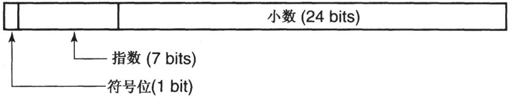
11. How would you accomplish the same result as the following code without using bit fields? Assume that you have a 16-bit machine that allocates bit fields from left to right.
struct {
int a:4;
int b:8;
int c:3;
int d:1;
} x;
...
x.a = aaa;
x.b = bbb;
x.c = ccc;
x.d = ddd;12. What does the following code fragment print?
struct {
int a:2;
} x;
...
x.a = 1;
x.a += 1;
printf( "%d\n", x.a );13. What (if anything) is wrong with the following code fragment?
union {
int a;
float b;
char c;
} x;
...
x.a = 25;
x.b = 3.14;
x.c = 'x';
printf( "%d %g %c\n", x.a, x.b, x.c );14. Suppose some information has been assigned to a union variable. How can this information be retrieved correctly?
15. The following structure could be used by a BASIC interpreter to keep track of the type and value of variables.
struct VARIABLE {
enum { INT, FLOAT, STRING } type;
union {
int i;
float f;
char *s;
} value;
};What would be different if the structure were written like this instead:
struct VARIABLE {
enum { INT, FLOAT, STRING } type;
union {
int i;
float f;
char s[MAX_STRING_LENGTH];
} value;
};★★ 1. The information saved by the telephone company when you make a long distance phone call includes the date and time you placed the call. It also includes three phone numbers: the one you called, the one you are calling from, and the one that will be billed. Each of these phone numbers has three parts: the area code, the exchange, and the station number. Write a structure declaration for this billing information.
★★ 2. Write a declaration for an information system that records sales at an auto dealer. The following data must be saved for every sale. The maximum length of string values given does not include space for the terminating NUL byte.
customer's name
string (20)
customer's address
string (40)
model
string (20)
Three different types of transactions are possible: all-cash sales, sales involving a loan, and leases. For all-cash sales, the following additional information must be saved:
manufacturer's suggested retail price
float
actual selling price
float
sales tax
float
licensing fee
float
For leases, the following additional information must be saved:
manufacturer's suggested retail price
float
actual selling price
float
down payment
float
security deposit
float
monthly payment
float
lease term
int
For sales involving a loan, the following additional information must be saved:
manufacturer's suggested retail price
float
actual selling price
float
sales tax
float
licensing fee
float
down payment
float
loan duration
int
interest rate
float
monthly payment
float
name of bank
string (20)
3. One of the computer's tasks is to decode each instruction in the program that is running to determine what operation to perform. On many machines, the decoding process is complicated by the fact that different instructions have different formats. On one particular machine, each instruction is 16 bits long, and the following different formats are implemented. Bits are numbered from right to left.
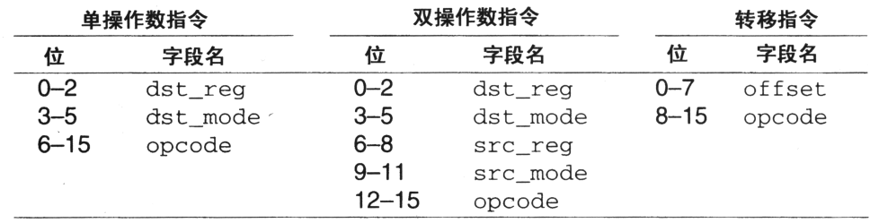
Your task is to write a declaration that will allow a program to interpret an instruction in any of these formats. Your declaration must also have an unsigned short field called addr that accesses all 16 bits. Use a typedef in your declaration to create a new type called machine_inst.
Given the declaration:
machine_inst x;the expressions below should access the indicated bits.
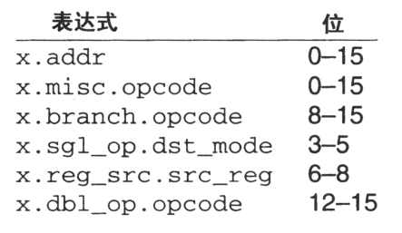
[1] An exception to this rule is the incomplete declaration of structure tag, described later in this chapter.